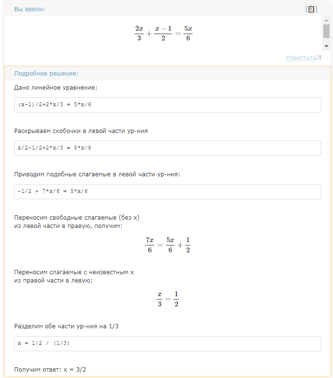
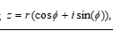
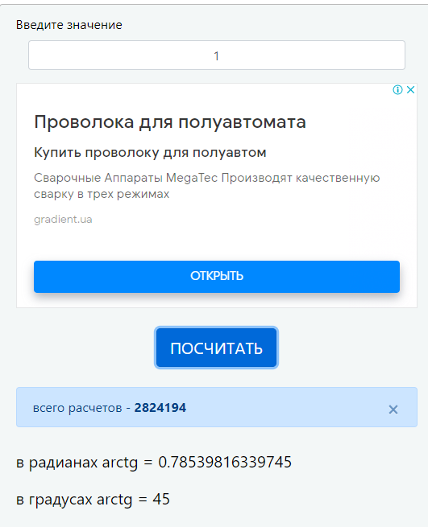
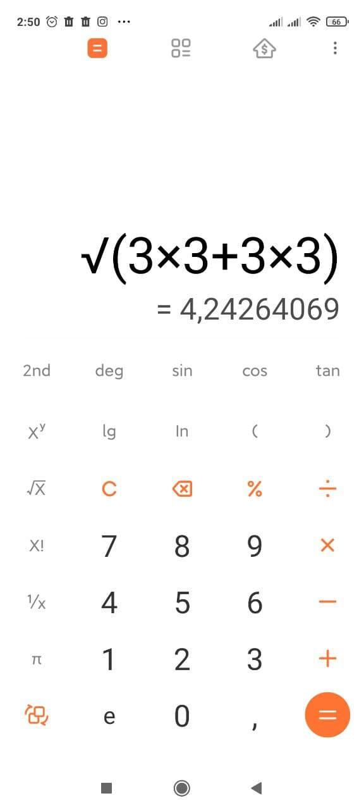

Опанувати технологію абстракції даних в мовах функціонального програмування. Реалізувати програму обробки раціональних та комплексних чисел мовами функціонального програмування, представивши ці числа конструкціями типу «пара»
Була обрана мова програмування Scheme, так як вона має легкий, зрозумілий синтаксис, який поюснюють на лекціях, практичних, а також рекомендована лектором. IDE - DrRacket. Головною перевагою для вибору данного середовища розробки є зручність та відсутність потреби у мережі інтернет
Перше завдання вірно віришує рівняння, оскільки співпало з результатом у онлайн калькуляторі.

Розберемо друге завдання за умови пари чисел a,b = -3 (перший запис результату). Тригонометричкий запис комплексних чисел має наступний вигляд:

Отже, задача полягає в тому, щоб знайти r, та число fi. fi находиться як арктангенс b поділене на а. Результат:

Результат переводимо у градуси та отримуємо значення pi, що міститься у результаті (з похибкою, оскільки дані округлялись).
Знаходимо r і бачимо що результат приблизно співпадає

В результаті роботи було вирішено два задання за допомогою мови Scheme. Було намальовано HIPO діаграми для кожного з завдань, проведено аналіз достовірності результатів, який показав що результати є вірними.